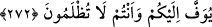

buyurmuşlardır.
Halkı, sadaka vermeye teşvîk ve terğîb gibi bir sebep söz konusu ise sadakanın açık
verilmesi daha hayırlıdır.
Muhammed b. Ali Hakîm Tirmizî diyor ki: Bir kimse bir amel işleyip bunu halktan
gizlemeye çalışsa, nefsi de bunun halk tarafından görünmesini istediği halde nefsinin bu
isteğini engellese, bu kez şeytan devreye girip yapılan amelin insanlara gösterilmesi
için mücâdele eder. Gönül de bu isteği reddederse bu kimse şeytanla savaşıyor
demektir.
Gizli olarak yapılan amel açık olarak yapılandan yetmiş derece daha fazîletlidir. Kul
farzları edâ edip nâfile ibadetleri yapmak sûretiyle Allah’a yaklaşır. Açık ve gizli her
iki halde de yapılan ameli Allah bilir ve ona göre kuluna karşılık verir.
Nitekim bir hadîs-i kudsîde şöyle buyurulmuştur: “Kullarım bana en çok kendilerine
farz kıldığım ibâdetleri yapmak sûretiyle yaklaşabilir. Kulum nâfileleri işlemek
sûretiyle bana yaklaşmaya devâm ederse ben onu severim. Ben onu sevince onun
kulağı, gözü, dili ve eli olurum. Benimle işitir, benimle görür, benimle konuşur ve
benimle tutar.”[250]
Amelleri, hiçbir dünyevî ve uhrevî maksad gözetmeden Allah için yapmak lâzımdır.
Çünkü bu gibi menfaat kaygısı taşımak şirktir. Şirk ise büyük bir zulümdür. Ondan
kaçınmak gerekir.
Cenâb-ı Hakk’a tâat kasdıyla yüzünü secdeye koyduğun için,
Kendini görmeden O’na kul olduğun için, hamd ve senâ et!
Sadakanın gizli olarak verilmesi, onun nefsânî arzulardan temizlenip sâdece Allah
için olması demektir. O takdîrde sadaka sâhibi Allah’ın gölgesinde bulunma hakkını
elde eder. Bu konuda Hz. Peygamber Efendimiz şöyle buyurmuştur:
“Kişi kıyamet günü sadakası altında gölgelenir.”[251]
Yâni eğer kişi sadakasını Allah için vermiş ise Allah’ın gölgesi altında, cenneti
kazanmak için vermişse cennetin gölgesinde ve eğer hevâsını tatmin etmek için vermişse
de “hâviye”nin (cehennemin) gölgesinde gölgelenir.
Âğulu zakkum ağaç meyve vermez, bilesin ki
Yere ne tohum ekersen, bitecek olan odur.
272. (Yâ Muhammed!) Onları doğru yola iletmek sana ait değildir. Lâkin Allah
dilediğini doğru yola iletir. Hayır olarak harcadıklarınız kendi iyiliğiniz içindir.